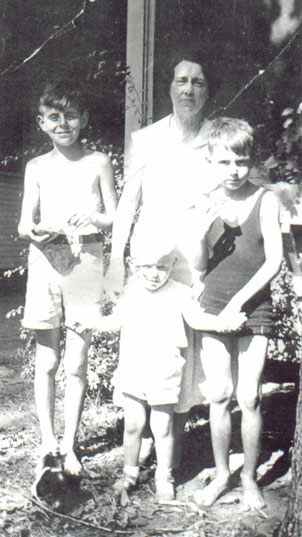

Agnes Mullane
18?? - 19??
Agnes Mullane married Scottish immigrant
Robert Craig
and together had 7 children. Her grandchildren called her Gammy.

Agnes with grandsons Bob, Dale, & Dick
Parents:
UNKNOWN
Offspring:
Robert James Craig
1898 - 1939
Charles Craig ???? - ?
James Craig ???? - ?
Walter Craig ???? - ?
Thomas Craig ???? - ?
John Craig ???? - ?
Gertrude Craig ???? - ?
References:
1. Virginia Craig
Last Modified: 12 May 2004 by
Bradley Wogsland
.